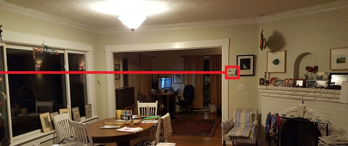
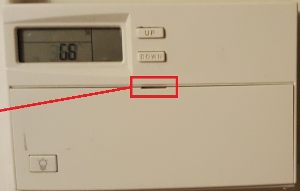
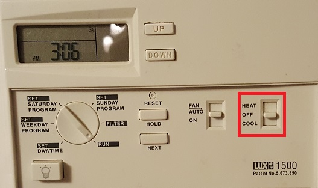
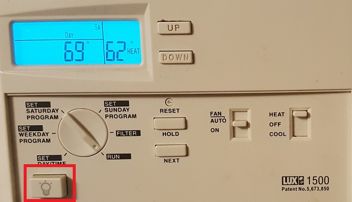
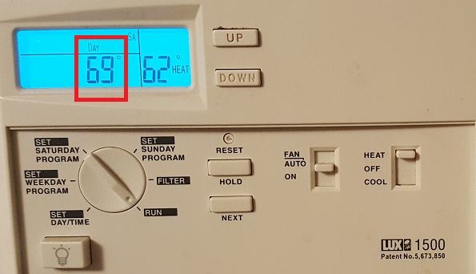
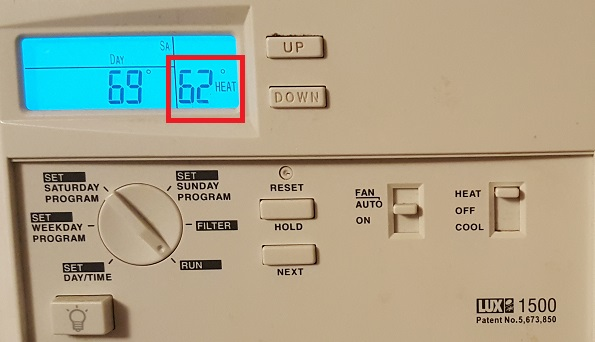
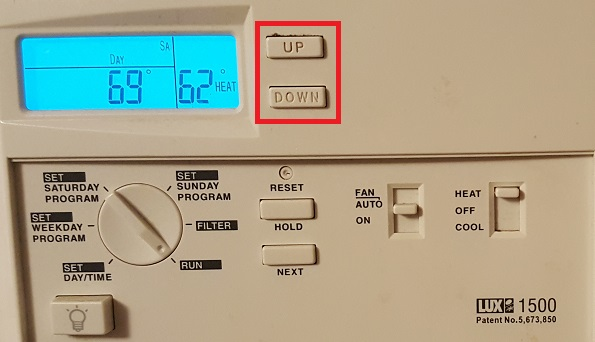

1209 Glen thermostat
The thermostat is just to the left of the dining area fireplace.

Open thermostat cover using your thumbnail here:

There is no air conditioning. To turn on the heat, push the switch up to "HEAT":

You can make the display more readable by turning on the light:

The leftmost temperature reading shows the current temperature in the house:

The rightmost temperature reading shows the target temperature, i.e., the temperature you are requesting:

Adjust the target temperature by tapping "UP" or "DOWN" -- note that you must hold the button down for more than a split second for the thermostat to notice:

Once you've set the temperature you want, the furnace will take a minute or so to warm up, after which you will feel warm air.